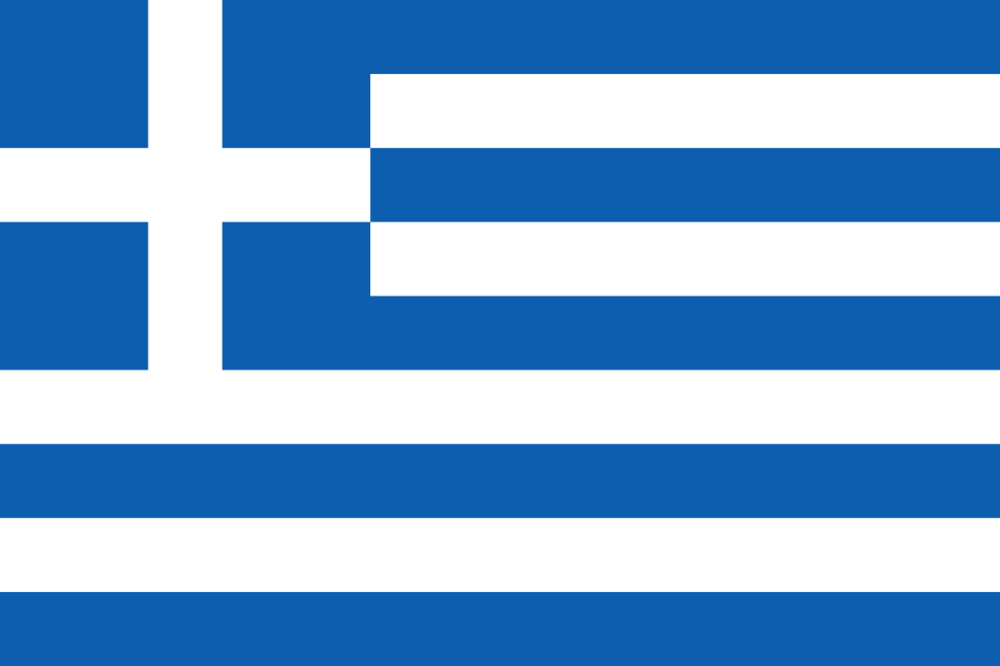

 Řecko (řecky Ελλάδα [eˈlaða] nebo Ελλάς [eˈlas]), plným názvem Řecká republika (řecky Ελληνική Δημοκρατία), je stát ležící v jižní Evropě – na jihu Balkánského poloostrova. Rozkládá se jak na evropské pevnině, tak na četných ostrovech v Egejském, Krétském, Thráckém, Středozemním, Jónském a díky úplnému severu ostrova Korfu i v Jaderském moři. 227 řeckých ostrovů je obydlených a i díky nim má Řecko nejdelší pobřeží Středozemního moře v Evropě a 11. nejdelší pobřeží na světě.